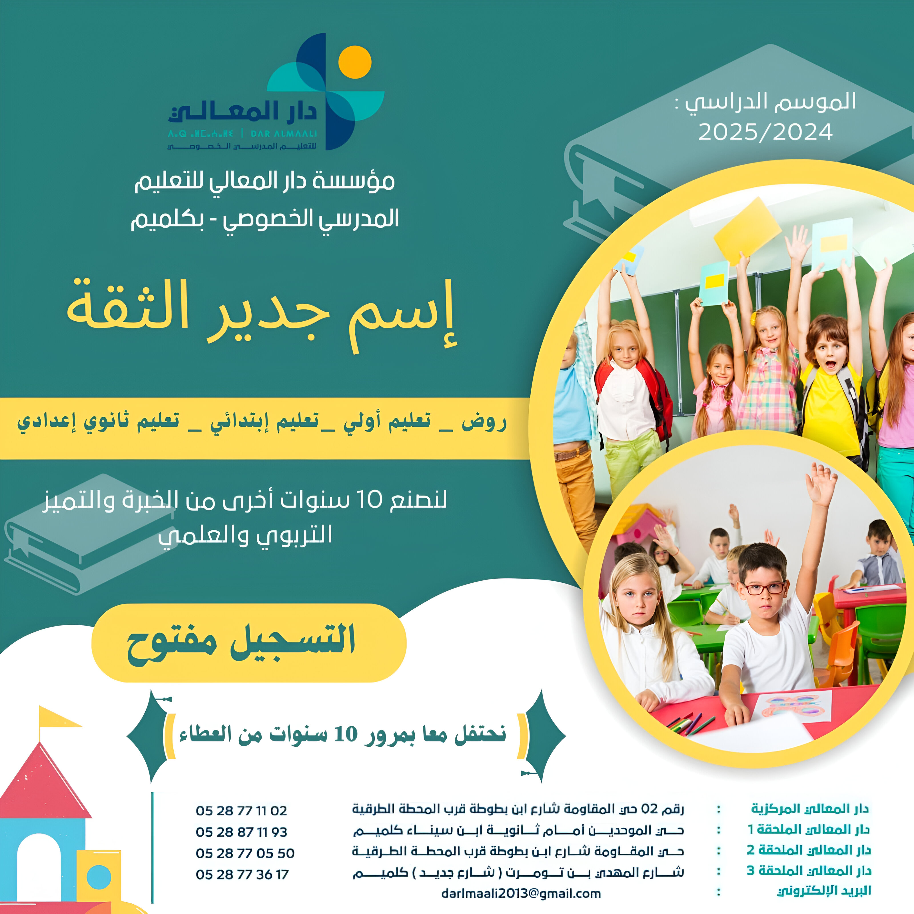

مؤسسة دار المعالي للتعليم هي مؤسسة تعليميَّة تربوية لها ازيد من 10 سنوات من العطاء والتميز التربوي والتعليمي بأطر إدارية وتربوية بكفاءة عالية

مؤسسة دار المعالي للتعليم هي مؤسسة تعليميَّة تربوية لها ازيد من 10 سنوات من العطاء والتميز التربوي والتعليمي بأطر إدارية وتربوية بكفاءة عالية
اكتشف موقعنا